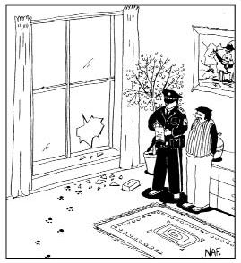

Mantık yoksa akıl yararsızdır. Mantıkla tartışmaları
kazanabilir ve kalabalığı dağıtabilirsiniz.
DIMITRI: Birbirine rakip birçok felsefe var. Bir şeyin doğruluğundan nasıl emin olacağım?
TASSO: Bir şeyin doğru olduğunu kim söylüyor?
DIMITRI: Aha, yine başladın. Neden hep sorulara sorularla yanıt veriyorsun?
TASSO: Rahatsız mı oldun?
DIMITRI: Niye sordum bilmiyorum zaten. Çünkü bazı şeyler doğrudur. İki artı ikinin dört etmesi gibi... İki, iki daha dört eder, doğrudur, konu kapanmıştır.
TASSO: İyi de, nasıl emin olabiliyorsun?
DIMITRI: Akıllıyım çünkü.
TASSO: O başka mesele. Ama iki artı ikinin dört ettiğinden eminsin çünkü işlem, mantığın aksi iddia edilemez yasalarına uyuyor.
Çelişmezlik Yasası
Tasso haklı.
Aristoteles mantığına dayanan şu klasik fıkrayla başlayalım:
İzak ile Samuel hahamın karşısına çıkarlar. İzak, "Haham Efendi," der, "Samuel her gün koyunlarını toprağımdan geçiriyor ve ekinlerim mahvoluyor.Toprak bana ait. Adalet istiyorum. Haksızlık bu!"
Haham, "Haklısın," der.
Ama aynı anda Samuel, "Ama Haham Efendi," der, "koyunlarımın gölden su içmesi için onun toprağından geçmekten başka çareleri yok. Susuzluktan ölsün mü zavallılar? Hem asırlardır her çoban, koyunlarını sulamak için su kaynağına giden araziden geçme hakkına sahiptir. Benim de koyunlarım olduğuna göre ben de bu hakka sahibim"
Haham, "Haklısın," der.
O sırada odaya girmiş ve etrafı toparlarken konuşmalara kulak vermiş olan karısı hahama, "İyi de," der, "ikisi birden haklı olamaz."
Haham eşine döner, "Sen de haklısın," der.
Karısı hahama Aristoteles'in Çelişmezlik Yasası'nı çiğnediğini bildirmektedir. Aslında bu yasanın ihlali bir haham için komşunun kızına göz dikmek kadar ağır olmasa da yine de az şey değildir. Çelişmezlik yasası, bir niteliğin bir şeye aynı anda hem ait olmasının hem de ait olmamasının olanaksız olduğunu söyler.
Mantık Dışı Akıl Yürütme
Mantık dışı akıl yürütme filozofların belalısı olsa da, Tanrı biliyor ya, bazen işe yarar. Pek tutulması muhtemelen bu yüzdendir.
Bir İrlandalı, Dublin'de bir bara girer, üç bardak bira ısmarlar; önce birinden, sonra diğerinden, daha sonra da üçüncüsünden birer yudum alır ve bu sırayla içerek üç bardağı bitirir. Ardından üç bira daha ısmarlar. Meraklanan barmen, "Her seferinde bir bardak alıp içsen, diğerleri ısınmaz," der.
Bunun üzerine adam, "Biliyorum," der. "Ama benim iki kardeşim var; biri Amerika'da, diğeri Avustralya'da oturuyor. Birbirimizden ayrılırken, birlikte içtiğimiz günlerin şerefine hep böyle içeceğimize söz verdik.Yani bardakların ikisi kardeşlerim, biri benim için."
Barmen duygulanır, "Ne kadar hoş," der.
Adam kısa süre içinde barın müdavimi olur ve her gece aynı şekilde içer. Derken günün birinde adam gene bara gelir ve bu sefer iki bardak ısmarlar. Barmen biraları verir ve içten bir üzüntüyle, "Başınız sağ olsun," der.
Adam gülümser, "Yok, yok," der, "kardeşlerim hayatta... Yalnız ben din değiştirip Mormon oldum; o yüzden alkolü bıraktım."
Nalıncı keseri mantığının işe yaradığı yerler de vardır yani.
Tümevarımlı Mantık
Tümevarımlı mantık tikel örneklerden genel teoriye doğru akıl yürütür. Bu yöntem, bilimsel teorilerin onaylanmasında kullanılır. Ağaçtan yeterince elmanın düşüşünü gözlemlerseniz, elmaların yukarı veya yana gitmek yerine daima aşağı düştüğü sonucuna varırsınız. Bunun ardından, mesela armut gibi düşen cisimler üstüne daha genel bir hipotez oluşturabilirsiniz. Bilim de zaten böyle ilerler.
Edebiyat tarihinde gözüpek Sherlock Holmes'tan daha fazla "tümdengelim" gücüyle donanmış başka bir karakterin olmadığına inanılır. Ancak Holmes'un çözümlerinde izlediği yol genellikle tümdengelimle alakasızdır ve meşhur dedektif gerçekte tümevarımlı mantık kullanır. Holmes, aşağıdaki fıkrada anlatıldığı üzere, öncelikle durumu büyük dikkatle inceler, ardından geçmiş deneyimlerinin ışığında analojiyi ve olasılığı kullanarak genelleme yapar:
Holmes, Watson'la birlikte kamp yapmaktadır. Gecenin geç bir saatinde Holmes uyanır ve Dr.Watson'ı dürter. "Watson," der, "göğe bak ve bana ne gördüğünü söyle."
"Milyonlarca yıldız görüyorum, Holmes," der Watson.
"Peki, bundan ne sonuca varıyorsun,Watson?"
Watson biraz düşünür, sonunda, "Şey," der, "astronomik açıdan milyonlarca galaksi ve muhtemelen milyarlarca gezegen bulunduğu sonucuna varıyorum. Astrolojik açıdan Satürn'ün Aslan burcuna girdiğini görüyorum. Zamansal açıdan saatin yaklaşık üçü çeyrek geçtiğini kestirebiliyorum. Meteorolojik açıdan yarının harika geçeceğini düşünüyorum. Teolojik açıdansa Tanrı'nın her şeye gücünün yettiğini ve bizim minnacık olduğumuzu çıkarabiliyorum. E, peki sen ne sonuca vardın, Holmes?"
"Birisi çadırımızı çalmış, dostum."
Holmes'un bu sonuca nasıl vardığını tam olarak bilmiyoruz ama olasılıkla şöyle bir şeydir:
1. Uykuya daldığımda çadırdaydım ama şimdi yıldızları görüyorum.
2. Geçmişte yaşadığım benzer deneyimlerle analoji içinde oluşturduğum çalışma hipotezim, birisinin çadırımızı çaldığı yönündeydi.
3. Hipotezi sınamak için alternatif hipotezlere baktım:
a. Belki çadır yerindedir ama birisi çadırın tavanına yıldızlı bir gece manzarası görüntüsü yansıtıyordur. İnsan davranışları ve donanıma dair geçmiş deneyimlerim bana ilgili donanımın çadırda bulunması gerektiğini bildiriyor ve öyle bir şey söz konusu değil. O halde bu fikir olası görünmüyor.
b. Belki çadır uçup gitmiştir. Ancak geçmiş deneyimlerim, çadırı uçuracak güçte bir rüzgârın, belki Watson'ı değil ama beni mutlaka uyandırmış olması gerekeceği sonucuna varmamı sağılıyor.
c. Vs, vs, vs.
4. Hayır, bence ilk hipotezim büyük olasılıkla doğru. Birisi çadırımızı çalmış.
Tümevarım... Onca yıl Holmes'un yeteneğini yanlış terimle tanımlamışız.
BİR TÜMEVARIMCI SIÇRAYIŞ MI?

"Nasıl bir hırsız sadece köpeğin
mama kabını çalabilir, onu diyorum."
Yanlışlanabilirlik
Hasta: Dün gece rüyamda Jennifer Lopez ve Angelina Jolie ile beraberdim. Sabaha kadar seviştik.
Psikolog: Hım. Derinlere gömülü bir anneyle yatma arzusu taşıdığınız son derece açık.
Hasta: Ne? Yahu kadınların ikisinin de anamla uzaktan yakından benzerliği yok!
Psikolog: Aha! Bir tepki oluşumu! Gerçek arzularınızı bastırdığınız son derece açık artık...
Yukarıdaki şaka değildir: Bazı Freudçular cidden tam da böyle akıl yürütürler. Bu akıl yürütme tarzındaki sorun, Oidipusçu teorileri çürütebilecek hiçbir örneğin bulunmamasıdır. Yirminci yüzyıl filozoflarından Karl Popper, tümevarımlı mantık eleştirisinde, bir teorinin sağlam olabilmesi için, onun yanlış olduğunu gösterebilecek bazı mümkün durumların bulunması gerektiğini öne sürmüştür. Yukarıdaki sahte şakadaysa, Freudçu psikologun kanıt kabul edebileceği bu tür durumlar söz konusu değildir.
Aşağıdaki sahici fıkraysa Popper'ın vurguladığı noktayı tümüyle göz önüne sermektedir:
İki adam kahvaltı etmektedir. Biri, ekmeğine yağ sürerken, "Hiç dikkat ettin mi?" der, "kızarmış ekmek yere düştüğünde daima yağ sürülü yüzü alta geliyor."
İkinci adam, "Hayır, bence yağlı yüz alta geldiğinde temizlik meselesi can sıkacağı için hep öyle düşüyormuş gibi geliyor... Her iki yüzünde aynı oranda altta kaldığına bahse girebilirim."
Beriki, "Ya, öyle mi? İzle o zaman," der ve elindeki ekmeği yere bırakır. Ekmek, yağlı yüzü üstte kalacak şekilde düşer.
İkinci adam, "Ya, demedim mi?" der.
Bunun üzerine diğeri, "A, anladım," der. "Tereyağını yanlış yüze sürmüşüm.
Bu adamın teorisini hangi kanıt yanlışlayabilir ki?
Tümdengelimli Mantık
Tümdengelimli mantıkta akıl yürütme genelden özele doğru işler. En temel tümdengelimli akıl yürütme, şu kıyasta görülür: "Tüm insanlar ölümlüdür; Sokrates bir insandır; o halde Sokrates ölümlüdür." Milletin yoldan çıkıp, "Tüm insanlar ölümlüdür; Sokrates ölümlüdür; öyleyse Sokrates bir insandır" türünden yanlış akıl yürütmelere düşmesi şaşırtıcıdır. Bunun, "Tüm insanlar ölümlüdür; bizim kedi ölümlüdür; öyleyse bizim kedi bir insandır" türü bir akıl yürütmeden hiçbir farkı yoktur.
Tümdengelimli akıl yürütmede çuvallamanın bir diğer yoluysa yanlış bir öncülden hareketle sonuca gitmektir:
Yaşlı bir kovboy bara girer ve bir içki ısmarlar. Barda oturmuş viskisini yudumlarken genç bir kadın gelip yanına oturur. Kovboya döner ve "Siz gerçek bir kovboy musunuz?" diye sorar.
Kovboy, "Eh," der, "tüm hayatımı çiftlikte at sürülerini güderek, çit tamir ederek ve sığır damgalayarak geçirdim. Yani, öyleyim herhalde."
Bunun üzerine kadın, "Bense bir lezbiyenim," der, "hayatım boyunca hep kadınları düşündüm. Sabah kalkar kalkmaz ilk işim kadınları düşünmektir. Duş alırken veya TV izlerken her şey aklıma kadınları getirir."
Kadın gittikten sonra bu sefer genç bir çift gelir ve yaşlı kovboya, "Affedersiniz," derler, "siz gerçek bir kovboy musunuz acaba?"
Adam genç çifte bakar. "Vallahi," der, "bu yaşıma kadar öyle biliyordum ama lezbiyenmişim meğer."
Kovboyun hangi noktada yanlış yola saptığını incelemek eğlenceli olabilir. Belki değildir ama yapacağız.
Gerçek kovboy olup olmadığı sorusuna karşılık veren adamımız şöyle akıl yürütmüştür:
1. Eğer bir kişi tüm zamanını kovboy işleri yaparak geçiriyorsa, o kişi gerçek bir kovboydur.
2. Tüm yaşamımı kovboy işleri yaparak geçiriyorum.
3. Öyleyse ben bir kovboyum.
Kadın ise şöyle akıl yürütmüştür:
1. Eğer bir kadın tüm zamanını kadınları düşünerek geçiriyorsa, o kadın bir lezbiyendir.
2. Ben bir kadınım.
3. Sürekli kadınları düşünüyorum.
4. Öyleyse ben bir lezbiyenim.
Ardından kovboy akıl yürütüp aynı sonuca ulaştığındaysa kendi durumu için yanlış bir önermeyi (2. Ben bir kadınım) kullanmıştır.
O kadar da değil? Felsefe tümüyle şakadır demedik herhalde.
Analojiye Dayanan Tümevarımlı Kanıtlama
Analojiye dayalı kanıtlamalar gibisi yoktur. Analojiye dayalı kanıtlamanın kullanımlarından biri evreni kim veya ne yarattı sorusunda görülür. Kimileri, evren bir saat gibi işlediğine göre, bir Saatçi de olmalıdır görüşündedir. On sekizinci yüzyıl deneycisi David Hume'un belirttiği gibi, bu pek de sağlam bir sav değildir çünkü bütünsel anlamda evrenle bire bir benzeştirilebilecek (bir diğer evren dışında) hiçbir şey yoktur ve haliyle analoji (benzeşim) kurmada bu evrenin herhangi bir parçasını kullanmamız gereklidir. Hem neden saat ayrıca, diye sorar Hume. Neden evren bir kanguruya benzer demeyelim? Sonuçta saat de, kanguru da organik olarak bağlantılı birer sistemdir. Ancak kanguru analojisi evrenin kökeni meselesinde, bu evren bir diğer evrenin üçüncü bir evrenle cinsel birleşmesinden doğmuştur gibi çok farklı bir sonuca yol açacaktır. Analojiye dayanan tümevarımlı kanıtlamada temel sorun, A nesnesinin kimi özelliklerinin B'ye benzemesinden dolayı, aynı A nesnesinin diğer özelliklerinin de B'ye benzeyeceğinin varsayılmasıdır. Oysa illa böyle olması gerekmez.
* * *
Saat kanıtlaması yakın dönemde, doğadaki şeylerin yapısal süper-karmaşıklığının (kar tanelerini, göz bebeklerini, kuarkları düşünün) süper-akıllı bir tasarımcının varlığını gerektirdiğini öne süren Akıllı Tasarım "teorisi" ile yeniden su yüzüne çıkmıştır. Pennsylvania'nın Dover kentinde Eğitim Komitesi, Akıllı Tasarım'ı müfredata evrim teorisine "alternatif teori" olarak sokmaya kalkıp mahkemeye verildiğinde davaya bakan hâkim John Jones III, Akıllı Tasarım davaya bakan hâkim John Jones III, Akıllı Tasarım savunucularını "Haydi kardeşim, okulunuza dönün" yollu bir kararla reddetmiştir. Hâkim, nüktedan gerekçesinde, Akıllı Tasarım kanıtlamasının kusurlu olduğunu kabul edip "ama bilimkurgu filmlerinde işe yarıyor" diyen bir profesör gibi savunmanın sözde uzman tanıklarıyla dalga geçmekten kendisini alamamıştır.
* * *
Analojiye dayalı kanıtlamaların bir diğer sorunuysa farklı bakış açılarıyla tümüyle başka benzeşimlere gidilmesidir:
Üç mühendislik öğrencisi, insan bedenini nasıl bir Tanrı'nın tasarlamış olabileceğini tartışmaktadır.
Birincisi, "Tanrı bir makine mühendisi olmalı," der, "şu eklemlere bir baksanıza!"
İkincisi, "Hayır," der, "bence Tanrı elektrik mühendisi... Sinir sisteminde binlerce elektrik bağlantısı var çünkü."
Üçüncüsü, "Yok," der, "bence Tanrı kesinlikle bir inşaat mühendisidir. Oyun parkının ortasından kanalizasyon borusu geçirmek başka kimin aklına gelir?"
Sonuçta benzeşime dayanan kanıtlamalar pek tatmin edici değildir. İş Tanrı'nın varlığı gibi temel inançlara geldiğinde beklenen kesinliği sunmayı başaramazlar. Bir filozofun kötü analoji yapmasından beteri yoktur (liseliler hariç). Aşağıda, The Washington Post'ta yayınlanmış "Lise Kompozisyon Ödevlerinde Yer Almış En Kötü Analojiler" listesinden birkaç örnek göreceksiniz:
"Yıllar önce zalim kaderin ayırdığı iki âşık çayırda, biri Cleveland'dan saat 18.36'da kalkmış ve saatte 88 kilometre, diğeriyse 19.47'de Topeka'dan kalkmış ve saatte 56 kilometre hızla giden iki tren misali birbirlerine koştu."
"John ve Mary hiç karşılaşmamışlardı. Onlar, birbiriyle hiç karşılaşmamış iki güvercin gibiydiler."
"Küçük kayık gölde, bir bowling topunun ilerleyemeyeceği kadar usulca ilerledi."
"Tavan arasından dünya dışı bir uluma duyuldu. Ortam, tıpkı başka bir kente tatile gittiğinizde en sevdiğiniz yarışma programı 19.00 yerine 19.30'da başladığında olduğu gibi ürkütücü ve gerçeküstüydü..."
"Post Hoc Ergo Propter Hoc" Yanılgısı
Bu terimi hiç bozuntuya vermeden, ciddi bir yüzle kullanın, özellikle partilerde epey işinize yarayacaktır. İşin komik tarafı, kendi dilinizde söylemeye kalktığınızda tam tersi etki yaratmasıdır: "Bundan sonra öyleyse bundan dolayı". Gel de anla!
Bu cümle, bir şey diğerini izlediğine göre, o şeyin diğeri yüzünden olduğunu varsayma hatasını anlatır. Gayet açık nedenler yüzünden bu yanlış mantık, "Eroin bağımlılarının çoğu işe marihuanayla başlamıştır" gibi sosyo-politik savlarda sıklıkla kullanılmaktadır. Söylenen doğrudur ama öte yandan, bahsedilen çoğunluktan çok daha fazlası işe sütle başlamıştır.
Bazı kültürlerde post hoc, hayatı daha eğlenceli kılar: "Güneş, horoz öttüğünde doğar; öyleyse güneşi doğuran horozun ötüşüdür!" Teşekkürler Horoz! Ya da şu meslektaşımızın yaptığına bir bakın:
Her sabah sundurmaya çıkıyor ve "Bu eve hiç kaplan gelmesin!" diye bağırıyor, ardından içeri giriyordu. Sonunda dayanamadık ve sorduk: "Niye böyle yapıyorsun? Buralarda kaplan yok ki!"
Ne dedi dersiniz?
"Ya, gördünüz mü? İşe yarıyor işte!"
Post hoc fıkraları insani kuruntularla oranlı artmıştır:
Yaşlı bir Yahudi, genç bir kızla evlenir. Birbirlerini çok sevmektedirler. Ancak adam ne denerse denesin, eşini bir türlü orgazma ulaştıramaz.Yahudi kadınlarının cinsel haz almaya hakları olduğundan, çift Hahama danışmaya karar verir. Haham dinler, sakalını sıvazlar ve şu öneride bulunur:
"Şöyle güçlü kuvvetli bir delikanlı bulun. Siz ikiniz sevişirken bu delikanlı bir havlu alıp sağa sola sallasın. Bu hanımın fantezi kurmasına yardım edecek ve orgazmı sağlayacaktır."
Eve giderler ve Hahamın tavsiyesini uygularlar. Yağız bir delikanlıya para verirler ve sevişirlerken havluyu sallamasını sağlarlar. Ancak yöntem işe yaramaz; kadın hâlâ tatmin olamamaktadır.
Şaşıran çift bir kez daha Hahama başvurur. "Peki," der Haham adama, "o zaman tersini deneyelim. Delikanlı hanımınla sevişsin, sen üzerlerine havlu salla."
Çift bir kez daha Hahamın önerisine uyar; delikanlı hanımıyla yatağa girerken yaşlı adam havluyu salmaya koyulur. Delikanlı pek cevvaldir ve çok geçmeden kadın bağıra çağıra orgazma ulaşır.
Yaşlı koca gülümser, delikanlıya bakar ve "Akılsız!" der, "havlu işte böyle sallanır!"
Tamam. Son bir post hoc fıkrası... Söz.
Seksenlik bir adam, huzurevinde pembe pantolonlu bir yaşlı hanıma yanaşır ve "Bugün benim doğum günüm!" der.
"Şahane," der kadın, "tam yaşını söyleyebileceğime bahse girerim."
"Ciddi mi? Nasıl?"
"Kolay," der kadın. "Pantolonunu indir." Adam pantolonunu indirir.
"Tamam," der kadın, şimdi donunu da indir."
Adam indirir. Kadın eliyle şöyle bir yoklar ve "Sen seksen dört yaşındasın," der.
Adam şaşırır. "Nasıl bildin?"
Kadın gülümser: "Dün söylemiştin."
Yaşlı adam en eski numarayı, yani, post hoc ergo proter hoc'u veya "yokladıktan sonra anladı, öyleyse yoklama yüzünden anladı"yı yutmuştur... Her seferinde tuzağa düşüren kısım, propter kısmıdır.
Post hoc ergo propter hoc genellikle bizleri aldatır çünkü işin içinde bir başka nedenin bulunduğunu fark etmeyi başaramayız.
New Yorklu bir genç, misafir gittiği Louisiana'da kuzeniyle bataklıkları gezmektedir. Kent çocuğu, kuzenine sorar: "Timsahların fenerle gezenlere saldırmadığı doğru mu?"
"Valla," der kuzeni, "fenerle ne kadar hızlı gezdiğine bakar."
Kentli delikanlının hatası, esasen bir prop (aksesuar) olan feneri propter sanmasıdır.
Monte Carlo Yanılgısı
Kumarbazlar Monte Carlo Yanılgısı'nı hemen tanıyacaktır. Bazıları bunun bir yanılgı oluşuna şaşacaktır çünkü onlar buna daha çok Monte Carlo Stratejisi muamelesi yapıyorlardır... Oysa tüm krupiyeler bu yanılgıya bel bağlar.
Yarısı kırmızı, yarısı siyah oluklu bir rulette kırmızının gelme şansının yüzde elli olduğunu biliriz. Ruleti çok fazla sayıda — mesela 1000 defa— döndürürsek ve ortada herhangi bir dümen yoksa ortalama 500 defa kırmızı gelmesi gerekir. Hal böyleyken, eğer altı dönüşün altısında birden siyah gelirse olasılıklar lehimize der ve yedinci turda paramızı kırmızıya koyarız. Çünkü "sıra kesinlikle" kırmızıdadır, değil mi? Değil. Değil çünkü ruletin kırmızıda durma olasılığı, önceki altısındaki gibi yedinci dönüşünde de yüzde ellidir ve bu, art arda kaç defa siyah gelirse gelsin değişmeyecektir.
İşte size Monte Carlo Yanılgısı'na dayanan bilgece bir öneri:
Güvenliğiniz için uçağa binerken yanınıza bir bomba alınız... Çünkü bir uçakta iki ayrı bombalı yolcu bulunma olasılığı son derece düşüktür.
Döngüsel Kanıtlama
Döngüsel kanıtlama, bir önerme için öne sürülen kanıtın önermenin kendisini içerdiği kanıtlamadır. Döngüsel kanıtlamalar çoğunlukla herhangi bir süsleme gerektirmeden kendi başına zaten fıkra sayılabilirler:
Kızılderililer sonbaharda yeni seçilen kabile büyücüsüne gitmiş ve kışın soğuk geçip geçmeyeceğini sormuşlar. Modern dünyanın âdetleriyle yetişmiş genç büyücü eskilerin sırlarından bihabermiş ve kışın nasıl geçeceği konusunda hiçbir fikre sahip değilmiş. Ne olur ne olmaz, işi sağlama alayım diye düşünen genç büyücü, kabile üyelerine soğuk bir kışa hazırlanmalarını salık vermiş. Birkaç gün sonra aklına gelmiş, Meteoroloji Müdürlüğü'ne telefon açmış ve soğuk bir kış bekleyip beklemediklerini sormuş. Görüştüğü meteorologsa kışın sahiden soğuk geçeceğini düşündüğünü söylemiş. Bunun üzerine büyücü kabileyi toplamış ve daha fazla odun depolamalarını buyurmuş.
Aradan birkaç hafta geçmiş. Büyücü meteorolojiyi bir kez daha aramış. Meteorolog bu sefer, "Çok soğuk bir kış olacağa benziyor," demiş. Büyücü bunun üzerine kabilesini yine toplamış ve bu sefer ormanda ne kadar yakacak odun, dal, kıymık bulurlarsa toplamalarını söylemiş.
Yine birkaç hafta geçince büyücü Meteoroloji İşleri'ni bir kez daha aramış ve durumu sormuş. Meteorolog bu kez çok heyecanlıymış. "Gelmiş geçmiş kışların en soğuğu olacak, öyle görünüyor," demiş.
Büyücü, "Ciddi misiniz?" demiş. "Nasıl bu kadar emin olabiliyorsunuz?"
Meteorolog bir an duraklamış ve "Kızılderililer," demiş, "çılgınca odun topluyorlar!"
Büyücünün daha fazla odun depolama gereğini dayandırdığı kanıtı dönüp dolaşmış ve kendisinin daha fazla odun depolaması çıkmıştır. Fakat şanslıdır çünkü hiç değilse artık döner-testereler kullanılmaktadır.
Otoriteye Başvurma
(Argumentum Ad Verecundiam) Yanılgısı
Otoriteye başvurma üzerinden tartışma veya kanıtlama, patronlarımızın gözdesidir. Öne sürülen sava destek için bir yetke sahibine dayanmak veya ondan alıntı yapmak kendi başına bir yanılgı değildir çünkü "uzman görüşü" diğer her kanıt kadar geçerlidir. İşin yanılgı kısmı, öne sürülen savda, aksini gösteren kanıtlara rağmen otorite tek merci olarak kabul edildiğinde ortaya çıkar.
Yolda Al ile karşılaşan John şaşkınlıkla haykırır: "Al! Ben seni öldü biliyordum!"
"Yok yahu," der Al gülerek. "Gördüğün gibi hayattayım."
"Mümkün değil," der John. "Bana senin öldüğünü söyleyen adam, senden daha güvenilir birisiydi!"
Otoriteye dayanan kanıtlamalarda oyun daima geçerli otorite kabulü gören kimse üzerinden kurulur:
Adamın birisi ev hayvanları satan bir dükkâna girer ve bir papağan almak istediğini söyler. Satıcı sırayla dükkânındaki harika papağanları gösterir, meziyetlerini saymaya koyulur. Nihayet en değerli papağanlar geldiklerinde, dükkân sahibi, "Bu," der, "5000 dolar. Şuradakiyse 10.000."
"Vay canına," der müşteri. "5000 dolarlık papağan ne yapabiliyor acaba?"
"Mozart'ın bütün aryalarını ezbere bilir ve söyler."
"Ya öteki?"
Dükkâncı gururla, "Buysa," der, "Wagner'in bütün eserlerini okur. Arkada bir tane daha var. Yalnız o, 30.000 dolar."
"Yuh," der müşteri. "O neyi söylüyor peki?"
"Valla," der dükkân sahibi, "ben şahsen şimdiye kadar bir şey söylediğini duymadım. Ama diğer ikisi ona 'maestro' diyor, onu biliyorum."
Otoritelerimize bakılırsa bazı otoriteler diğerlerinden daha muteberdir; sorun, karşı taraf bu itibara itibar etmediğinde çıkar:
Dört haham teoloji konusunda tartışmaktadır ve üçü sürekli dördüncüye karşı görüşte olmakta birleşmektedir. Sonunda bir gün, diğer üçüne karşı yine kaybeden dördüncü haham, daha yüksek bir merciye başvurmaya karar verir.
"Ya Rabbi," diye haykırır, "Haklı olduğumu ve onların yanıldığını ta yüreğimin derinlerinde biliyorum... Lütfen bana haklılığımı kanıtlayacak bir işaret yolla!"
Hava çok güzeldir, gökte hiç bulut yoktur ve güneş ışıldamaktadır. Ancak haham duasını bitirir bitirmez dört hahamın tepesinde bir fırtına bulutu belirir; gök gümbürder ve derhal yağmur başlar. "Tanrı'nın işareti!" diye haykırır dördüncü haham, "Gördünüz mü? Haklıyım işte! Biliyordum!" Ancak diğer üç haham omuz silker, güneşli günlerde aniden beliren fırtına bulutlarının sık rastlanan bir doğa olayı olduğunu söylerler.
Bunun üzerine dördüncü haham yine dua eder: "Ey Tanrı'm, bunlara yanıldıklarını göstermem için bana daha büyük bir işaret lazım. Lütfen Tanrı'm, daha büyük bir işaret yolla!" Bu sefer dört fırtına bulutu belirir, hızla gökte birleşip kocaman, ürkütücü bir buluta dönüşürler. Şimşekler çakar ve hahamların az ötesindeki bir tepeye yıldırım düşer.
Haham heyecanla, "Gördünüz mü?" Haklıyım işte! diye bağırır ya, diğer üçü yine gördükleri arasında doğal nedenlerle açıklanmayacak hiçbir şey bulunmadığını söylerler.
Haham çok ama çok büyük bir işaret dilemek için ağzını açıp "Ya Rabbi," dediği anda gökyüzü kapkara kesilir, yer sarsılır ve muazzam bir ses duyulur:
HAHAM İZAK HAKLI!
Bunun üzerine haham elleri belinde, üç arkadaşına döner ve "E?" der.
Diğer hahamlardan biri omuz silkerek, "E'si," der, "şimdi üçe iki olduk."
Zenon Paradoksu
Doğru görünen varsayımlara dayanarak doğru görünen bir akıl yürütmeyle bir çelişkiye ya da yanlışlığı bariz bir başka sonuca varan çıkarıma paradoks denir. Ya da hafifçe farklı bir deyişle şakanın tanımı —en azından bu kitaptakilerin çoğunun— budur, denebilir. Gerçek "şeyin" olanca mantıklılığıyla yanlış "şeye" çıkaran saçma bir yanı olur ve saçmalık, komiktir. Karşılıklı çelişen iki fikri kafamızda tutmak gıdıklayıcıdır. Ama en güzel tarafı, alengirli bir paradoksu toplantılarda anlatmanın bolca kahkaha ve artı puan kazandırmasıdır.
Karşılıklı olarak birbirini dışlayan düşünceleri aynı anda kullanmaya geldiğinde işin piri Elealı Zenon'dur. Ayağına tez Akhilleus ile kaplumbağanın yarışına ilişkin öyküyü duymuş muydunuz? Efendim, Akhilleus haliyle kaplumbağadan daha hızlı koşacağı için, kaplumbağaya epey önden başlama avantajı tanınmış... Şart ise şuymuş: Akhilleus, silah patlar patlamaz —ya da çağın gereği, kargı atılır atılmaz— koşmaya başlayıp kaplumbağanın yarışa başladığı noktaya ulaşmalıymış. Tabii Akhilleus o noktaya koşarken kaplumbağa da biraz yol almış. Akhilleus kaplumbağanın başladığı noktaya geldiğinde bu sefer kaplumbağanın vardığı yeni noktaya ulaşması gerekmiş. Akhilleus kaplumbağanın bulunduğu önceki noktaya kaç defa erişirse erişsin kaplumbağaya asla yetişememiş (feci yaklaşmış gerçi). Yarışı kazanmak için kaplumbağanın yapması gereken tek şey hiç durmamakmış...
Tamam, Zenon elbette Jay Leno[4] değil ama bir beşinci yüzyıl filozofu olarak hiç de fena olmadığını kabul etmek lazım. Ayrıca klasik stand-up komedyenleri gibi Zenon da, "Bende tonla şaka bitmez," diyebilir... Eh, aslında Zenon'da bunlardan sadece dört tane vardır. Bunlardan bir diğeri, yine bir yarış paradoksudur ve bu paradoks, bir yarışçının pistin sonuna varmak için sayısız yol alması gerektiğini söyler. Yarışçı önce pist uzunluğunun yarısını kat edecek, ardından kalan yarının yarısını kat edecek ve ardından kalan yarının yarısından kalan yarının yarısını... Teorik açıdan bakıldığında yarışçı her seferinde alması gereken yolun yarısını sonsuz defa alacağından pistin sonuna asla ulaşamayacaktır. Ama elbette ulaşır. Zenon da bunun farkındadır.
Aşağıda, adeta doğrudan Zenon'dan çıkmış görünen eski bir espri var:
Satıcı: "Han'fendi, bu elektrikli süpürge işinizi yarı yarıya azaltacaktır.
"Müşteri: "Harika! İki tane alayım o zaman."
Bu esprinin tuhaf bir yanı var. Yarış paradoksu tamam, akla yatkın değildir ve yanlışın nerede olduğunu kestiremesek bile bir şeyin yanlış olduğundan eminizdir. Oysa elektrikli süpürge esprisinde Zenoncu akıl yürütme hiç de paradoksal değildir: Kadının hedefi işini hiç zaman geçirmeden yapmaksa, hiçbir sayıda süpürge (ve kadınla aynı anda onları çalıştıracak sayıda süpürge kullanıcısı) bunu başaramayacaktır. İki elektrikli süpürgeyi çalıştırmak temizlik süresini dörtte üç; üç tanesi altıda beş azaltacak ve böyle devam edeceğinden süpürge sayısı sonsuza gidecektir.
Mantıksal ve Semantik Paradokslar
Tüm mantıksal ve semantik paradoksların anası, yaratıcısı yirminci yüzyıl İngiliz filozofu Bertrand Russell'ın adıyla anılan Russell Paradoksu'dur. Söz konusu paradoks şunu der: "Kendi kendinin elemanı olmayan kümelerin kümesi kendi kendisinin elemanı mıdır?" Matematikten çakmıyorsanız "Ben almayayım!" diyeceğiniz bir paradokstur bu. Ama sakin olun: iki yirminci yüzyıl mantıkçısı, Grelling ve Nelson, Russell Paradoksu'nun daha anlaşılır bir çeşitlemesini ortaya atmayı başarmıştır. Bu, kendilerine göndermede bulunan sözcükler üzerinden işleyen semantik bir paradokstur.
Buyurun bakalım: İki tür sözcük vardır; kendi kendilerine gönderme yapanlar (otolojik) ve kendilerine gönderme yapmayanlar (heterolojik). Kısa bir sözcük olan "Kısa" sözcüğü otolojik sözcüklere, gene kısa bir sözcük olan "Uzun" sözcüğüyse heterolojik sözcüklere örnektir. Peki, "heterolojik" sözcüğü heterolojik midir, otolojik mi? Otolojikse, heterolojik demektir. Yok, heterolojikse, o zaman otolojiktir. Ha! Ha!
Hâlâ gülen yok mu? Eh, demek ki felsefi bir kavramı fıkrayla anlatmanın işe yarayacağı bir vakayla daha karşı karşıyayız. Haydi o zaman:
Bir köyde tek bir berber varmış ve bu berber sadece kendi kendilerini tıraş edemeyenleri tıraş edermiş. Peki, bu berber bu köyde kime traş olur?
Hanımların tuvaletlerine pek girmediğimizden oralarda ne var bilemiyoruz ama erkek okurlarımızın erkek tuvaletlerinin duvarlarına veya kapılarına yazılı paradoksları hatırlayacaklarına eminiz. Böyleleri Russell'ın veya Grelling-Nelson'un paradokslarıyla aynı seviyede ancak daha kestirmecidir.
"Bu cümle yanlıştır" cümlesi doğru mu yanlış mı?
Veya
Başarısız olmayı deneyip başaran kişinin yaptığı hangisidir?
Bir dahaki sefere umumi tuvalete gittiğinizde duvara, " 'Heterolojik' sözcüğü otolojik midir, heterolojik mi?" yazın. Çok klâs harekettir...
* * *
DIMITRI: Pek şeker. Ama tüm bunların Büyük Soruları yanıtlamakla ilgisi ne?
TASSO: Eh, diyelim ki Delphoi'deki kâhini ziyaret ettin ve ona, "Tüm bunlar nedir, ey kâhin?" diye sordun. O da sana, "Yaşam bir pikniktir; tüm piknikler eğlencedir; öyleyse yaşam eğlencedir," desin. Al sana muhabbet konusu... Yani mantık sana hakkında konuşacak bir şeyler verdi işte...